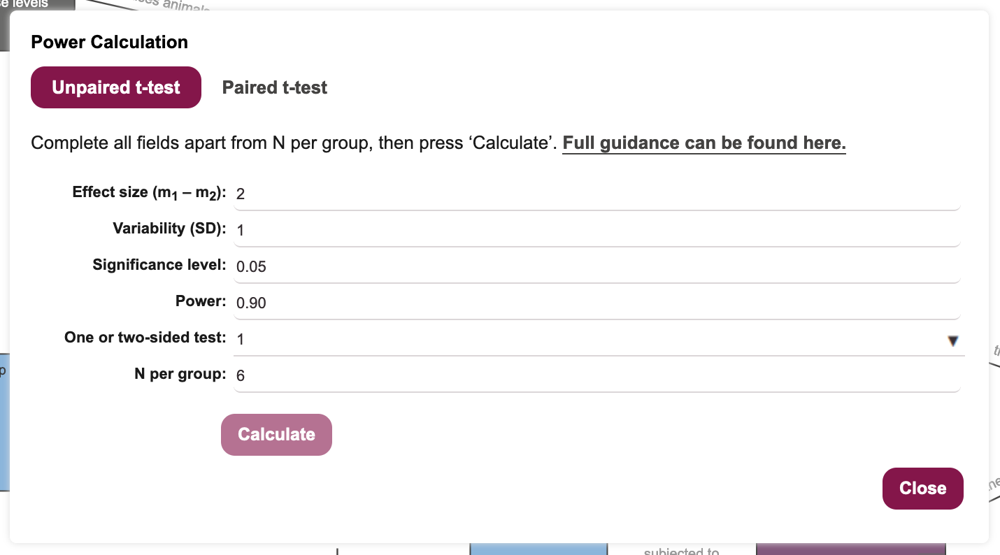

14 Estimate Sample Size
Our final design diagram is complete, with no critique errors, and an analysis suggestion of one-way ANOVA with blocking factor(s). We can now use the EDA’s Sample Size Calculation tool to estimate the required number of individuals per group, to achive a certain level of statistical power.
In order to be able to estimate a suitable sample size, the tool needs the researcher to provide realistic values for:
- The effect size that the researcher wishes to detect in the comparison. This might be the size of effect considered “clinically relevant”, or assumed to be comparable to some previous treatment.
- The variability of the outcome measure being compared. Depending on how the analysis is being performed, this might be the average standard deviation across all measurements, or the expected variation (standard deviation) in the measured difference. These values typically come from previous experiments.
- The significance level of the hypothesis test, representing the threshold at which the null hypothesis would be discarded 1.
- The desired power of the experiment, i.e. the probability with which, if there is an effect of at least the stated effect size to be found, it will reach the stated significance level 2.
- The sidedness of the test. Generally, if the experiment aims to test for a difference but the direction of the difference is not known (the treatment may increase or decrease the size of a tumour, say), a two-sided test would be used. But if the direction of the desired effect is known (e.g. we wish to detect whether a treatment decreases the size of a tumour) a one-sided test should be used 3.
The EDA site has an extensive introduction to the concepts supporting power calculations.
As noted in Chapter 11 and Chapter 12, even experienced scientists with many publications and long track records of research funding may never have received any formal training in experimental design or statistics. As a consequence they can propagate poor or suboptimal advice that may not be correct. As noted by Simon Bate on the NC3Rs site:
I often hear “we always use n=6” or “the other researchers use n=6, so shall we”. Needless to say, this is not a recommended approach. You cannot simply copy someone else’s sample sizes; you need to assess the variability of data generated in your lab, under your experimental conditions and using your protocols. Even if your supervisor or manager says “use n=6”, make sure you question them and check it is suitable!
Ultimately, as a researcher you are responsible for the rigour and ethics of your own actions. It is always advisable to consult with a statistician, rather than trust the word of senior scientists alone.
Don’t be this guy (Figure 14.1).
14.1 Run the Sample Size Calculation Tool
- Click on
Tools -> Sample Size Calculationin the menu bar (Figure 14.2) to bring up the Power Calculation dialogue box (Figure 14.3).
- Use the NC3Rs EDA decision tree to choose the appropriate power calculation (Figure 14.4).
Starting at the top of the tree, we are asked a series of questions, as we progress through the flowchart:
- Are you planning on analysing your data with a parametric analysis?
Yes we are, since ANOVA is a parametric analysis.
- Does each animal receive multiple treatments, acting as its own control?
No. Each animal receives a single treatment and there are separate control and treatment groups.
- Does your experiment only involve two groups.
Technically, this is true. We are interested in a single main comparison involving two groups (control and treatment). We have a further two groups male and female as a blocking factor but, because this is only a blocking factor and not a main comparison, we ignore sex for the purposes of the power calculation.
The decision tree leads us to the box containing the advice to Use power calculation for an unpaired t-test, with variability as the average standard deviation of the outcome measurement being made.
Ensure the power calculation dialogue for the unpaired t-test is selected (as in Figure 14.3).
Decide on an expected effect size that is biologically relevant. For the purpose of this workshop, let’s assume that we need to see a decrease in blood glucose of at least 2mM/L. Enter the value 2 into the Effect size field.
Decide on an expected variability in the outcome measure. This is usually determined from previous studies, but here we will assume that variability is 1mM/L, for the sake of the workshop. Enter the value 1 into the Variability field.
Decide on a significance level for your statistical hypothesis test. This is under researcher control, and we will keep it at 0.05 for the purpose of the workshop.
Decide on a suitable power (probability of avoiding a false negative error) for the statistical test. This is under researcher control, and power values of 0.8-0.9 are usually acceptable to funders. We will keep this value at 0.9 for the purpose of the workshop.
Decide whether this will be a one- or two-sided test. As we have specified that we are expecting to see a decrease in blood glucose for a positive outcome, a one-sided t-test is appropriate and will give increased power for the same number of experimental subjects. Set the One or two-sided test field to 1 4 (Figure 14.5).
- Click on the
Calculate N per groupbutton to have the Sample Size Calculation tool return an estimated sample size for the desired power (?fig-sample-size-5).
 10. Populate the “Control” Group node with the recommended number of experimental units, using the Node properties dialogue box. Enter the number of experimental units, the number of animals, and add a justification for the choice of sample size (Figure 14.6). Click on Close to dismiss the dialogue.
- Populate the “Treatment” Group node with the recommended number of experimental units, using the Node properties dialogue box. Enter the number of experimental units, the number of animals, and add a justification for the choice of sample size.Click on
Closeto dismiss the dialogue.
14.2 Rename and Save the Diagram
- Change the name of the diagram by clicking on the text
Untitled Diagramat the top, to bring up a dialogue box (Figure 14.7). Rename the diagram as “MP968_Workshop”, and click theOKbutton.
- Save the experiment by clicking on the
Save(floppy disk) icon at the top left of the tool (Figure 14.8).
Note that discarding the null hypothesis is not typically confirmatory of any specific alternative hypothesis.↩︎
Suppose the effect size is 0.5, and the significance level is 0.05. An experiment with power of 0.8 would detect a true effect size of 0.5, at \(P \leq 0.05\) in approximately 80 out of every 100 times the experiment was run, assuming all statistical test assumptions are met.↩︎
One-sided tests offer greater statistical power, for the same sample size, if the expected direction of change is known.↩︎
The choice depends on our null hypothesis. If our null hypothesis is “drug A has no effect” we should use a two-sided t-test. If our null hypothesis is “drug A does not reduce blood glucose” we should use a one-sided t-test. The choice of null hypothesis is under researcher control.↩︎